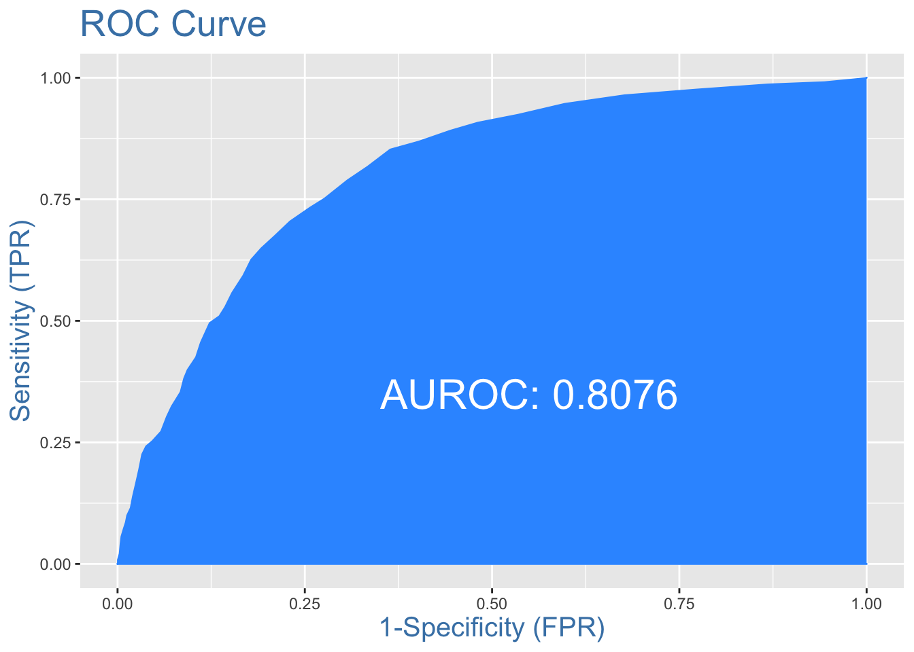

Chapter 2 Model Building
2.1 Earth algorithm
mars2 <- earth(INS ~ ., data = train,glm = list(family = binomial))
summary(mars2)## Call: earth(formula=INS~., data=train, glm=list(family=binomial))
##
## GLM coefficients
## 1
## (Intercept) 12.4962153
## DDA1 -1.1873152
## IRA1 0.6075324
## INV1 0.4968479
## INVmissing -0.5275512
## CC1 0.4248063
## BRANCHB16 -0.5909910
## h(5.6-ACCTAGE) 0.0786095
## h(DDABAL-1304.97) -0.0005778
## h(9011.31-DDABAL) -0.0006905
## h(DDABAL-9011.31) 0.0005864
## h(4-DEP) 0.1206177
## h(CHECKS-1) -0.0402306
## h(2-TELLER) -0.1595330
## h(TELLER-2) 0.0728178
## h(SAVBAL-1520.04) -0.0003573
## h(6272.8-SAVBAL) -0.0005466
## h(SAVBAL-6272.8) 0.0003550
## h(12661.3-ATMAMT) -0.0000965
## h(21300-CDBAL) -0.0000800
## h(31366-MMBAL) -0.0000496
## h(MMBAL-31366) -0.0000977
## h(2654.41-CCBAL) 0.0001692
##
## GLM (family binomial, link logit):
## nulldev df dev df devratio AIC iters converged
## 7680.57 5945 6177.36 5923 0.196 6223 4 1
##
## Earth selected 23 of 29 terms, and 16 of 74 predictors
## Termination condition: RSq changed by less than 0.001 at 29 terms
## Importance: SAVBAL, MMBAL, CDBAL, DDA1, DDABAL, CC1, IRA1, CCBAL, ...
## Number of terms at each degree of interaction: 1 22 (additive model)
## Earth GCV 0.1755326 RSS 1027.979 GRSq 0.2260737 RSq 0.2374873evimp(mars2)## nsubsets gcv rss
## SAVBAL 22 100.0 100.0
## MMBAL 20 68.4 69.9
## CDBAL 20 63.8 65.6
## DDA1 19 53.2 55.7
## DDABAL 19 53.2 55.7
## CC1 15 33.3 37.1
## IRA1 15 29.8 34.2
## CCBAL 14 30.6> 34.5>
## CHECKS 14 27.5 31.9
## ATMAMT 13 25.9 30.3
## TELLER 12 24.3 28.6
## INVmissing 11 21.8 26.3
## ACCTAGE 9 19.2 23.4
## BRANCHB16 7 14.1 18.4
## DEP 3 9.3 12.1
## INV1 1 5.3 7.0library(InformationValue) #ROC curve
#validation ROC
mars_val<-predict(mars2,newdata=val,type="response")
plotROC(val$INS,mars_val)